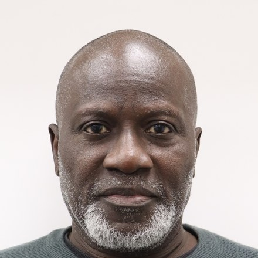

Our people
OluRotimi Akinkunmi Padonu
- Grants Coordinator
OluRotimi Akinkunmi Padonu is a seasoned executive and development finance specialist, supporting CORAfrica’s mission to transform rural communities. With more than 30 years of leadership experience across the United Kingdom, Africa and the United States, he brings deep expertise in project finance, clean energy and community-centred development.
He strengthens CORAfrica’s governance and administrative systems to build the structures required to deliver the organisation’s 2026–2030 Strategic Plan. His work ensures CORAfrica is equipped with the policies, documentation and institutional frameworks needed to unlock partnerships, grants and multi-year funding for its expanding education, healthcare, agriculture and community programmes.